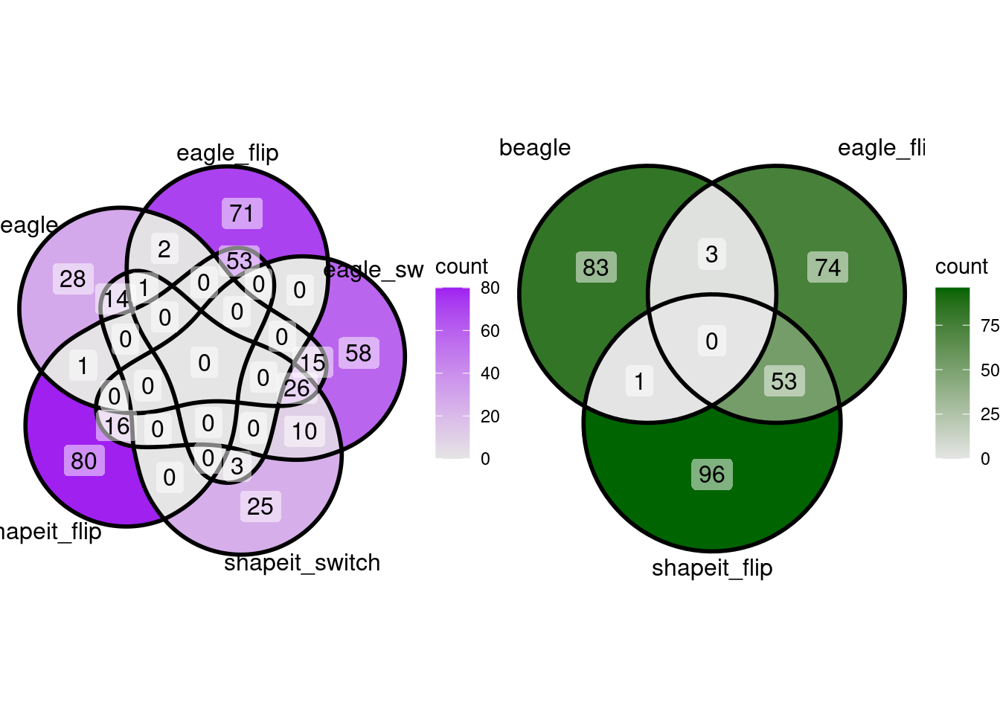

venn_diagram
Andy Beck
2024-02-20
Last updated: 2024-02-26
Checks: 6 1
Knit directory: phasing/
This reproducible R Markdown analysis was created with workflowr (version 1.7.1). The Checks tab describes the reproducibility checks that were applied when the results were created. The Past versions tab lists the development history.
Great! Since the R Markdown file has been committed to the Git repository, you know the exact version of the code that produced these results.
Great job! The global environment was empty. Objects defined in the global environment can affect the analysis in your R Markdown file in unknown ways. For reproduciblity it’s best to always run the code in an empty environment.
The command set.seed(20220221) was run prior to running
the code in the R Markdown file. Setting a seed ensures that any results
that rely on randomness, e.g. subsampling or permutations, are
reproducible.
Great job! Recording the operating system, R version, and package versions is critical for reproducibility.
Nice! There were no cached chunks for this analysis, so you can be confident that you successfully produced the results during this run.
Using absolute paths to the files within your workflowr project makes it difficult for you and others to run your code on a different machine. Change the absolute path(s) below to the suggested relative path(s) to make your code more reproducible.
| absolute | relative |
|---|---|
| /net/snowwhite/home/beckandy/research/phasing/output/final_switch_errors/switch_errors/eagle/annotated/ | output/final_switch_errors/switch_errors/eagle/annotated |
| /net/snowwhite/home/beckandy/research/phasing/output/final_switch_errors/switch_errors/shapeit/annotated/ | output/final_switch_errors/switch_errors/shapeit/annotated |
| /net/snowwhite/home/beckandy/research/phasing/output/final_switch_errors/switch_errors/beagle/annotated/ | output/final_switch_errors/switch_errors/beagle/annotated |
| /net/snowwhite/home/beckandy/research/phasing/output/final_switch_errors/vcf_n_sites/ | output/final_switch_errors/vcf_n_sites |
| /net/snowwhite/home/beckandy/research/phasing/output/final_switch_errors/whatshap/ | output/final_switch_errors/whatshap |
| /net/snowwhite/home/beckandy/research/phasing/output/final_switch_errors/het_loc/annotated/ | output/final_switch_errors/het_loc/annotated |
| /net/snowwhite/home/beckandy/research/phasing/output/chrX_maf_simple.tsv | output/chrX_maf_simple.tsv |
Great! You are using Git for version control. Tracking code development and connecting the code version to the results is critical for reproducibility.
The results in this page were generated with repository version 49efb0c. See the Past versions tab to see a history of the changes made to the R Markdown and HTML files.
Note that you need to be careful to ensure that all relevant files for
the analysis have been committed to Git prior to generating the results
(you can use wflow_publish or
wflow_git_commit). workflowr only checks the R Markdown
file, but you know if there are other scripts or data files that it
depends on. Below is the status of the Git repository when the results
were generated:
Ignored files:
Ignored: .Rhistory
Ignored: .Rproj.user/
Ignored: data/1kgp/
Ignored: data/consensus/
Ignored: data/gnomAD/
Ignored: data/mask/
Ignored: data/ovary/
Ignored: data/recomb/
Ignored: data/ref/
Ignored: data/shapeit/
Ignored: output/2023_switch_errors/
Ignored: output/X_hets/
Ignored: output/admix_switch_errors/
Ignored: output/afr_eur_ref/
Ignored: output/background_rates/
Ignored: output/figures/
Ignored: output/filter_switch_errors/
Ignored: output/final_switch_errors/
Ignored: output/gnomad/
Ignored: output/male_only_reference/
Ignored: output/nygc/
Ignored: output/singleton_switch_errors/
Ignored: plink.log
Ignored: sandbox/
Unstaged changes:
Modified: analysis/_site.yml
Modified: code/batch_annotate_het.sh
Modified: code/batch_annotate_switch.sh
Modified: code/batch_diploid_v3.sh
Modified: code/batch_vote_phase.sh
Note that any generated files, e.g. HTML, png, CSS, etc., are not included in this status report because it is ok for generated content to have uncommitted changes.
These are the previous versions of the repository in which changes were
made to the R Markdown (analysis/venn_diagram.Rmd) and HTML
(docs/venn_diagram.html) files. If you’ve configured a
remote Git repository (see ?wflow_git_remote), click on the
hyperlinks in the table below to view the files as they were in that
past version.
| File | Version | Author | Date | Message |
|---|---|---|---|---|
| Rmd | 49efb0c | Andy Beck | 2024-02-26 | wflow_publish("analysis/venn_diagram.Rmd") |
Introduction
In this document we will explore the construction of a “venn diagram” of the overlap of phasing errors across three methods over 700 synthetic diploids. Intuitively, this makes sense for a single synthetic diploid: we partition all errors into categories determined by which method(s) produced the error. The potential complication is if we wish to look only at particular classes of errors, e.g. switches or flips. For an example of what can happen, suppose a heterozygous location is the site of a switch in Beagle. That same position could be the location of a switch in Eagle or SHAPEIT, or it may have been correctly phased. Those are not exhaustive, however; another potential outcome is that same location is the latter half of a flip error in either Eagle or SHAPEIT. Is this still considered an overlapping switch?
For a first pass, I’ll be a bit exhaustive in terms of the categories of overlap for the errors in a single synthetic diploid.
load_het_pos <- function(id, het_loc_dir){
fname <- paste0(het_loc_dir, "pair_", id, ".csv")
return(read_csv(fname, show_col_types = FALSE))
}
load_switch_df <- function(id, switch_dir){
fname <- paste0(switch_dir, "switch_", id, ".csv")
results <- read_csv(fname, show_col_types = FALSE)
flip_loc <- get_flip_pos(results)
results$is_flip <- (results$pos_start %in% flip_loc) | (results$pos_end %in% flip_loc)
results$flip <- results$pos_end %in% flip_loc
# results <- results %>%
# filter(flip | (!is_flip & !flip))
# return(results %>% select(-is_flip))
return(results)
}
annotate_het_list <- function(id, het_loc_dir, beagle_dir, eagle_dir, shapeit_dir, df_freq){
result <- load_het_pos(id, het_loc_dir)
df_b <- load_switch_df(id, beagle_dir)
df_e <- load_switch_df(id, eagle_dir)
df_s <- load_switch_df(id, shapeit_dir)
result$switch_b <- result$pos %in% {df_b %>% filter(!is_flip) %>% pull(pos_start)}
result$flip_b <- result$pos %in% {df_b %>% filter(flip) %>% pull(pos_start)}
result$flip2_b <- result$pos %in% {df_b %>% filter(is_flip & !flip) %>% pull(pos_start)}
result$switch_e <- result$pos %in% {df_e %>% filter(!is_flip) %>% pull(pos_start)}
result$flip_e <- result$pos %in% {df_e %>% filter(flip) %>% pull(pos_start)}
result$flip2_e <- result$pos %in% {df_e %>% filter(is_flip & !flip) %>% pull(pos_start)}
result$switch_s <- result$pos %in% {df_s %>% filter(!is_flip) %>% pull(pos_start)}
result$flip_s <- result$pos %in% {df_s %>% filter(flip) %>% pull(pos_start)}
result$flip2_s <- result$pos %in% {df_s %>% filter(is_flip & !flip) %>% pull(pos_start)}
result <- left_join(result,
{df_freq %>%
select(POS, maf)},
by = c("pos" = "POS"))
return(result)
}
df <- annotate_het_list(1, het_loc_dir, beagle_switch_dir, eagle_switch_dir, shapeit_switch_dir, df_freq)For the ggVennDiagram library, we will want lists of
positions for each error type (note that here we “double count” flips by
including the positions of both involved heterozygous sites):
x <- list(beagle = {df %>% filter(switch_b | flip_b | flip2_b) %>% pull(pos)},
eagle = {df %>% filter(switch_e | flip_e | flip2_e) %>% pull(pos)},
shapeit = {df %>% filter(switch_s | flip_s | flip2_s) %>% pull(pos)})
ggVennDiagram(x) + scale_fill_gradient(low="grey90",high = "red")I want to be a bit more rigorous in counting overlaps; for each method, I only want start sites to overlap errors of other methods, i.e. I don’t want to double count flips in method A, but would count as overlap if same position were the second-half of a flip in method B.
# Get flip and switch positions
b_flip_pos <- {df %>% filter(flip_b) %>% pull(pos)}
e_flip_pos <- {df %>% filter(flip_e) %>% pull(pos)}
s_flip_pos <- {df %>% filter(flip_s) %>% pull(pos)}
b_switch_pos <- {df %>% filter(switch_b) %>% pull(pos)}
e_switch_pos <- {df %>% filter(switch_e) %>% pull(pos)}
s_switch_pos <- {df %>% filter(switch_s) %>% pull(pos)}
b_flip2_pos <- {df %>% filter(flip2_b) %>% pull(pos)}
e_flip2_pos <- {df %>% filter(flip2_e) %>% pull(pos)}
s_flip2_pos <- {df %>% filter(flip2_s) %>% pull(pos)}
# Beagle overlap
b_switch_unique <- b_switch_pos[b_switch_pos %!in% c(e_flip_pos, s_flip_pos, e_switch_pos, s_switch_pos, e_flip2_pos, s_flip2_pos)]
b_switch_e <- b_switch_pos[(b_switch_pos %in% c(e_flip_pos, e_switch_pos, e_flip2_pos)) & b_switch_pos %!in% c(s_flip_pos, s_switch_pos, s_flip2_pos)]
b_switch_s <- b_switch_pos[(b_switch_pos %in% c(s_flip_pos, s_switch_pos, s_flip2_pos)) & b_switch_pos %!in% c(e_flip_pos, e_switch_pos, e_flip2_pos)]
b_switch_e_s <- b_switch_pos[b_switch_pos %in% c(s_flip_pos, s_switch_pos, s_flip2_pos) & b_switch_pos %in% c(e_flip_pos, e_switch_pos, e_flip2_pos)]
b_flip_unique <- b_flip_pos[b_flip_pos %!in% c(e_flip_pos, s_flip_pos, e_switch_pos, s_switch_pos, e_flip2_pos, s_flip2_pos)]
b_flip_e <- b_flip_pos[(b_flip_pos %in% c(e_flip_pos, e_switch_pos, e_flip2_pos)) & b_flip_pos %!in% c(s_flip_pos, s_switch_pos, s_flip2_pos)]
b_flip_s <- b_flip_pos[(b_flip_pos %in% c(s_flip_pos, s_switch_pos, s_flip2_pos)) & b_flip_pos %!in% c(e_flip_pos, e_switch_pos, e_flip2_pos)]
b_flip_e_s <- b_flip_pos[b_flip_pos %in% c(s_flip_pos, s_switch_pos, s_flip2_pos) & b_flip_pos %in% c(e_flip_pos, e_switch_pos, e_flip2_pos)]
# Eagle Overlap
e_switch_unique <- e_switch_pos[e_switch_pos %!in% c(b_flip_pos, s_flip_pos, b_switch_pos, s_switch_pos, b_flip2_pos, s_flip2_pos)]
e_switch_b <- e_switch_pos[(e_switch_pos %in% c(b_flip_pos, b_switch_pos, b_flip2_pos)) & e_switch_pos %!in% c(s_flip_pos, s_switch_pos, s_flip2_pos)]
e_switch_s <- e_switch_pos[(e_switch_pos %in% c(s_flip_pos, s_switch_pos, s_flip2_pos)) & e_switch_pos %!in% c(b_flip_pos, b_switch_pos, b_flip2_pos)]
e_switch_b_s <- e_switch_pos[e_switch_pos %in% c(s_flip_pos, s_switch_pos, s_flip2_pos) & e_switch_pos %in% c(b_flip_pos, b_switch_pos, b_flip2_pos)]
e_flip_unique <- e_flip_pos[e_flip_pos %!in% c(b_flip_pos, s_flip_pos, b_switch_pos, s_switch_pos, b_flip2_pos, s_flip2_pos)]
e_flip_b <- e_flip_pos[(e_flip_pos %in% c(b_flip_pos, b_switch_pos, b_flip2_pos)) & e_flip_pos %!in% c(s_flip_pos, s_switch_pos, s_flip2_pos)]
e_flip_s <- e_flip_pos[(e_flip_pos %in% c(s_flip_pos, s_switch_pos, s_flip2_pos)) & e_flip_pos %!in% c(b_flip_pos, b_switch_pos, b_flip2_pos)]
e_flip_b_s <- e_flip_pos[e_flip_pos %in% c(s_flip_pos, s_switch_pos, s_flip2_pos) & e_flip_pos %in% c(b_flip_pos, b_switch_pos, b_flip2_pos)]
# SHAPEIT Overlap
s_switch_unique <- s_switch_pos[s_switch_pos %!in% c(b_flip_pos, e_flip_pos, b_switch_pos, e_switch_pos, b_flip2_pos, e_flip2_pos)]
s_switch_b <- s_switch_pos[(s_switch_pos %in% c(b_flip_pos, b_switch_pos, b_flip2_pos)) & s_switch_pos %!in% c(e_flip_pos, e_switch_pos, e_flip2_pos)]
s_switch_e <- s_switch_pos[(s_switch_pos %in% c(e_flip_pos, e_switch_pos, e_flip2_pos)) & s_switch_pos %!in% c(b_flip_pos, b_switch_pos, b_flip2_pos)]
s_switch_b_e <- s_switch_pos[s_switch_pos %in% c(e_flip_pos, e_switch_pos, e_flip2_pos) & s_switch_pos %in% c(b_flip_pos, b_switch_pos, b_flip2_pos)]
s_flip_unique <- s_flip_pos[s_flip_pos %!in% c(e_flip_pos, b_flip_pos, e_switch_pos, b_switch_pos, e_flip2_pos, b_flip2_pos)]
s_flip_b <- s_flip_pos[(s_flip_pos %in% c(b_flip_pos, b_switch_pos, b_flip2_pos)) & s_flip_pos %!in% c(e_flip_pos, e_switch_pos, e_flip2_pos)]
s_flip_e <- s_flip_pos[(s_flip_pos %in% c(e_flip_pos, e_switch_pos, e_flip2_pos)) & s_flip_pos %!in% c(b_flip_pos, b_switch_pos, b_flip2_pos)]
s_flip_b_e <- s_flip_pos[s_flip_pos %in% c(e_flip_pos, e_switch_pos, e_flip2_pos) & s_flip_pos %in% c(b_flip_pos, b_switch_pos, b_flip2_pos)]
# Get countsI think I have to double count flips for this analysis, since we’d want to identify cases where the latter half of a flip is also the location of either a switch or the start of a flip in another method.
- Switches: get list of which ones do or do not appear in the error lists for the other methods
- Flips: identify overlaps, subsetting list to begin position
What’s missing from above code is checking if flip2 overlaps an error in the other methods
Or, hear me out: we say nuts to the above, and just do the very simple criteria of:
- Switches are shared only with switches that occur at the same position
- Flips are shared only with flips that start at the same position
- Everything else is distinct as far as we care
So for each SD we get two venn diagrams with 3 circles.
x <- list(beagle = {df %>% filter(switch_b) %>% pull(pos)},
eagle = {df %>% filter(switch_e) %>% pull(pos)},
shapeit = {df %>% filter(switch_s) %>% pull(pos)})
p1 <- ggVennDiagram(x, label = "count") +
scale_fill_gradient(low="grey90",high = "green") +
ggtitle("Switches") +
theme(plot.title = element_text(hjust = 0.5))
x <- list(beagle = {df %>% filter(flip_b) %>% pull(pos)},
eagle = {df %>% filter(flip_e) %>% pull(pos)},
shapeit = {df %>% filter(flip_s) %>% pull(pos)})
p2 <- ggVennDiagram(x, label="count") +
scale_fill_gradient(low="grey90",high = "blue") +
ggtitle("Flips") +
theme(plot.title = element_text(hjust = 0.5))
gridExtra::grid.arrange(p1,p2,ncol=2)
Naturally, we may ask how many intersections of errors do we miss by considering only matching error types and, in the case of flips, only matching directly overlapping errors. First, we look at how many switches from eagle overlap flips from the other two methods:
x <- list(beagle = {df %>% filter(switch_b | flip_b | flip2_b) %>% pull(pos)},
eagle = {df %>% filter(switch_e) %>% pull(pos)},
shapeit = {df %>% filter(switch_s | flip_s | flip2_s) %>% pull(pos)})
ggVennDiagram(x) + scale_fill_gradient(low="grey90",high = "orange") + ggtitle("Switches") + theme(plot.title = element_text(hjust = 0.5))
So, if we wanted to aggregate these counts across multiple SDs, we’d have to generate 14 numbers per SD. Is there a quick way of doing this?
df_switch <- df %>%
filter(switch_b | switch_e | switch_s) %>%
mutate(beagle = ifelse(switch_b, "Y", "N"),
eagle = ifelse(switch_e, "Y", "N"),
shapeit = ifelse(switch_s, "Y", "N")) %>%
mutate(count_cat = paste(beagle, eagle, shapeit, sep="_")) %>%
pull(count_cat) %>%
table() %>%
as.data.frame() %>%
rename(count_cat = ".")
df_flip <- df %>%
filter(flip_b | flip_e | flip_s) %>%
mutate(beagle = ifelse(flip_b, "Y", "N"),
eagle = ifelse(flip_e, "Y", "N"),
shapeit = ifelse(flip_s, "Y", "N")) %>%
mutate(count_cat = paste(beagle, eagle, shapeit, sep="_")) %>%
pull(count_cat) %>%
table() %>%
as.data.frame() %>%
rename(count_cat = ".")And let’s get this for all EUR SDs:
Simple Overlap
# Version which only does exact matches of flips and switches
get_error_counts <- function(ids, het_loc_dir, beagle_switch_dir, eagle_switch_dir, shapeit_switch_dir, df_freq){
n <- length(ids)
results <- vector(mode = "list", length = 2)
df <- annotate_het_list(ids[1], het_loc_dir, beagle_switch_dir, eagle_switch_dir, shapeit_switch_dir, df_freq)
df_switch <- df %>%
filter(switch_b | switch_e | switch_s) %>%
mutate(beagle = ifelse(switch_b, "Y", "N"),
eagle = ifelse(switch_e, "Y", "N"),
shapeit = ifelse(switch_s, "Y", "N")) %>%
mutate(count_cat = paste(beagle, eagle, shapeit, sep="_")) %>%
pull(count_cat) %>%
table() %>%
as.data.frame() %>%
rename(count_cat = ".")
df_flip <- df %>%
filter(flip_b | flip_e | flip_s) %>%
mutate(beagle = ifelse(flip_b, "Y", "N"),
eagle = ifelse(flip_e, "Y", "N"),
shapeit = ifelse(flip_s, "Y", "N")) %>%
mutate(count_cat = paste(beagle, eagle, shapeit, sep="_")) %>%
pull(count_cat) %>%
table() %>%
as.data.frame() %>%
rename(count_cat = ".")
for(i in 2:n){
df <- annotate_het_list(ids[i], het_loc_dir, beagle_switch_dir, eagle_switch_dir, shapeit_switch_dir, df_freq)
df_switch2 <- df %>%
filter(switch_b | switch_e | switch_s) %>%
mutate(beagle = ifelse(switch_b, "Y", "N"),
eagle = ifelse(switch_e, "Y", "N"),
shapeit = ifelse(switch_s, "Y", "N")) %>%
mutate(count_cat = paste(beagle, eagle, shapeit, sep="_")) %>%
pull(count_cat) %>%
table() %>%
as.data.frame() %>%
rename(count_cat = ".", Freq2 = Freq)
df_switch <- df_switch %>%
left_join(df_switch2, by="count_cat") %>%
mutate(Freq = Freq + Freq2) %>%
select(-Freq2)
df_flip2 <- df %>%
filter(flip_b | flip_e | flip_s) %>%
mutate(beagle = ifelse(flip_b, "Y", "N"),
eagle = ifelse(flip_e, "Y", "N"),
shapeit = ifelse(flip_s, "Y", "N")) %>%
mutate(count_cat = paste(beagle, eagle, shapeit, sep="_")) %>%
pull(count_cat) %>%
table() %>%
as.data.frame() %>%
rename(count_cat = ".", Freq2 = Freq)
df_flip <- df_flip %>%
left_join(df_flip2, by="count_cat") %>%
mutate(Freq = Freq + Freq2) %>%
select(-Freq2)
}
results[[1]] <- df_switch
results[[2]] <- df_flip
return(results)
}EUR
results_eur <- get_error_counts(1:200, het_loc_dir, beagle_switch_dir, eagle_switch_dir, shapeit_switch_dir, df_freq)
results_eur[[1]] %>%
knitr::kable()| count_cat | Freq |
|---|---|
| N_N_Y | 7565 |
| N_Y_N | 14678 |
| N_Y_Y | 2829 |
| Y_N_N | 11214 |
| Y_N_Y | 3105 |
| Y_Y_N | 3700 |
| Y_Y_Y | 7250 |
results_eur[[2]] %>%
knitr::kable()| count_cat | Freq |
|---|---|
| N_N_Y | 7829 |
| N_Y_N | 7056 |
| N_Y_Y | 2851 |
| Y_N_N | 4588 |
| Y_N_Y | 3189 |
| Y_Y_N | 2048 |
| Y_Y_Y | 5082 |
AFR
results_afr <- get_error_counts(201:400, het_loc_dir, beagle_switch_dir, eagle_switch_dir, shapeit_switch_dir, df_freq)
results_afr[[1]] %>%
knitr::kable()| count_cat | Freq |
|---|---|
| N_N_Y | 6093 |
| N_Y_N | 19304 |
| N_Y_Y | 2485 |
| Y_N_N | 14982 |
| Y_N_Y | 2981 |
| Y_Y_N | 3314 |
| Y_Y_Y | 6506 |
results_afr[[2]] %>%
knitr::kable()| count_cat | Freq |
|---|---|
| N_N_Y | 10060 |
| N_Y_N | 10313 |
| N_Y_Y | 4014 |
| Y_N_N | 6786 |
| Y_N_Y | 4884 |
| Y_Y_N | 2375 |
| Y_Y_Y | 6849 |
AMR
results_amr <- get_error_counts(401:500, het_loc_dir, beagle_switch_dir, eagle_switch_dir, shapeit_switch_dir, df_freq)
results_amr[[1]] %>%
knitr::kable()| count_cat | Freq |
|---|---|
| N_N_Y | NA |
| N_Y_N | 6244 |
| N_Y_Y | 1043 |
| Y_N_N | 4487 |
| Y_N_Y | NA |
| Y_Y_N | 1447 |
| Y_Y_Y | NA |
results_amr[[2]] %>%
knitr::kable()| count_cat | Freq |
|---|---|
| N_N_Y | 3472 |
| N_Y_N | 3212 |
| N_Y_Y | 1264 |
| Y_N_N | NA |
| Y_N_Y | 1432 |
| Y_Y_N | NA |
| Y_Y_Y | 2226 |
EAS
results_eas <- get_error_counts(501:600, het_loc_dir, beagle_switch_dir, eagle_switch_dir, shapeit_switch_dir, df_freq)
results_eas[[1]] %>%
knitr::kable()| count_cat | Freq |
|---|---|
| N_N_Y | 6420 |
| N_Y_N | 10617 |
| N_Y_Y | 2330 |
| Y_N_N | 8074 |
| Y_N_Y | 2635 |
| Y_Y_N | 3063 |
| Y_Y_Y | 5464 |
results_eas[[2]] %>%
knitr::kable()| count_cat | Freq |
|---|---|
| N_N_Y | 5121 |
| N_Y_N | 5434 |
| N_Y_Y | 1972 |
| Y_N_N | 3306 |
| Y_N_Y | 2063 |
| Y_Y_N | 1361 |
| Y_Y_Y | 3222 |
SAS
results_sas <- get_error_counts(601:700, het_loc_dir, beagle_switch_dir, eagle_switch_dir, shapeit_switch_dir, df_freq)
results_sas[[1]] %>%
knitr::kable()| count_cat | Freq |
|---|---|
| N_N_Y | 4866 |
| N_Y_N | 9174 |
| N_Y_Y | 1814 |
| Y_N_N | 7228 |
| Y_N_Y | 2002 |
| Y_Y_N | 2410 |
| Y_Y_Y | 4347 |
results_sas[[2]] %>%
knitr::kable()| count_cat | Freq |
|---|---|
| N_N_Y | 4957 |
| N_Y_N | 5213 |
| N_Y_Y | 1807 |
| Y_N_N | 3075 |
| Y_N_Y | 1906 |
| Y_Y_N | 1300 |
| Y_Y_Y | 3117 |
Errors in Bins
To get the sense of how much the methods overlap in a larger scale, we’ll look at the aggregate number of errors in bins across the genome for both switches and flips. First, let’s take a look at what this overlap looks like within a single synthetic diploid:
bin_size <- 10000000 # try 1MB
df <- annotate_het_list(1, het_loc_dir, beagle_switch_dir, eagle_switch_dir, shapeit_switch_dir, df_freq) %>%
mutate(bin_id = ceiling(pos / bin_size))Let’s first look at switches across bins
df %>%
group_by(bin_id) %>%
summarize(beagle = sum(switch_b),
eagle = sum(switch_e),
shapeit = sum(switch_s)) %>%
pivot_longer(-bin_id, names_to = "method", values_to = "switches") %>%
ggplot(aes(x = bin_id, y = switches, color = method)) +
geom_point() +
geom_line() +
theme_classic()
sessionInfo()R version 4.3.2 (2023-10-31)
Platform: x86_64-pc-linux-gnu (64-bit)
Running under: Ubuntu 20.04.6 LTS
Matrix products: default
BLAS: /usr/lib/x86_64-linux-gnu/openblas-pthread/libblas.so.3
LAPACK: /usr/lib/x86_64-linux-gnu/openblas-pthread/liblapack.so.3; LAPACK version 3.9.0
locale:
[1] LC_CTYPE=en_US.UTF-8 LC_NUMERIC=C
[3] LC_TIME=en_US.UTF-8 LC_COLLATE=en_US.UTF-8
[5] LC_MONETARY=en_US.UTF-8 LC_MESSAGES=en_US.UTF-8
[7] LC_PAPER=en_US.UTF-8 LC_NAME=C
[9] LC_ADDRESS=C LC_TELEPHONE=C
[11] LC_MEASUREMENT=en_US.UTF-8 LC_IDENTIFICATION=C
time zone: America/New_York
tzcode source: system (glibc)
attached base packages:
[1] stats graphics grDevices utils datasets methods base
other attached packages:
[1] ggVennDiagram_1.5.2 ggExtra_0.10.1 lubridate_1.9.3
[4] forcats_1.0.0 stringr_1.5.1 dplyr_1.1.4
[7] purrr_1.0.2 readr_2.1.5 tidyr_1.3.1
[10] tibble_3.2.1 ggplot2_3.5.0 tidyverse_2.0.0
[13] workflowr_1.7.1
loaded via a namespace (and not attached):
[1] gtable_0.3.4 xfun_0.42 bslib_0.6.1 processx_3.8.3
[5] callr_3.7.5 tzdb_0.4.0 vctrs_0.6.5 tools_4.3.2
[9] ps_1.7.6 generics_0.1.3 parallel_4.3.2 fansi_1.0.6
[13] highr_0.10 pkgconfig_2.0.3 lifecycle_1.0.4 farver_2.1.1
[17] compiler_4.3.2 git2r_0.33.0 munsell_0.5.0 getPass_0.2-4
[21] httpuv_1.6.14 htmltools_0.5.7 sass_0.4.8 yaml_2.3.8
[25] crayon_1.5.2 later_1.3.2 pillar_1.9.0 jquerylib_0.1.4
[29] whisker_0.4.1 ellipsis_0.3.2 cachem_1.0.8 mime_0.12
[33] tidyselect_1.2.0 digest_0.6.34 stringi_1.8.3 labeling_0.4.3
[37] rprojroot_2.0.4 fastmap_1.1.1 grid_4.3.2 archive_1.1.7
[41] colorspace_2.1-0 cli_3.6.2 magrittr_2.0.3 utf8_1.2.4
[45] withr_3.0.0 scales_1.3.0 promises_1.2.1 bit64_4.0.5
[49] timechange_0.3.0 rmarkdown_2.25 httr_1.4.7 bit_4.0.5
[53] gridExtra_2.3 hms_1.1.3 shiny_1.8.0 evaluate_0.23
[57] knitr_1.45 miniUI_0.1.1.1 rlang_1.1.3 Rcpp_1.0.12
[61] xtable_1.8-4 glue_1.7.0 rstudioapi_0.15.0 vroom_1.6.5
[65] jsonlite_1.8.8 R6_2.5.1 fs_1.6.3